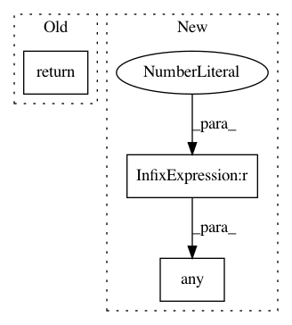

651f0ca63fc948c5b76a2ecfd9ee6bdfe60b0636,niftynet/engine/image_windows_aggregator.py,WindowAsImageAggregator,_is_stopping_signal,#Any#,84
Before Change
@staticmethod
def _is_stopping_signal(location_vector):
return np.all(location_vector[1:4] + location_vector[4:7]) == 0
class GridSamplesAggregator(ImageWindowsAggregator):
def __init__(self,
After Change
@staticmethod
def _is_stopping_signal(location_vector):
return np.any(location_vector < 0)
class GridSamplesAggregator(ImageWindowsAggregator):
def __init__(self,
image_reader,
output_path="./",
In pattern: SUPERPATTERN
Frequency: 3
Non-data size: 3
Instances
Project Name: NifTK/NiftyNet
Commit Name: 651f0ca63fc948c5b76a2ecfd9ee6bdfe60b0636
Time: 2017-08-21
Author: wenqi.li@ucl.ac.uk
File Name: niftynet/engine/image_windows_aggregator.py
Class Name: WindowAsImageAggregator
Method Name: _is_stopping_signal
Project Name: keras-team/autokeras
Commit Name: a8eabdad14eee8a47257248fa271700fcce939cb
Time: 2018-05-01
Author: jhfjhfj1@gmail.com
File Name: autokeras/bayesian.py
Class Name: IncrementalGaussianProcess
Method Name: predict
Project Name: NifTK/NiftyNet
Commit Name: 651f0ca63fc948c5b76a2ecfd9ee6bdfe60b0636
Time: 2017-08-21
Author: wenqi.li@ucl.ac.uk
File Name: niftynet/engine/image_windows_aggregator.py
Class Name: GridSamplesAggregator
Method Name: _is_stopping_signal